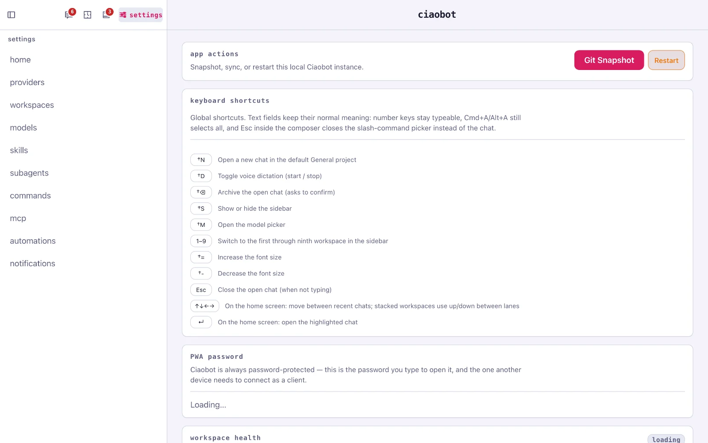
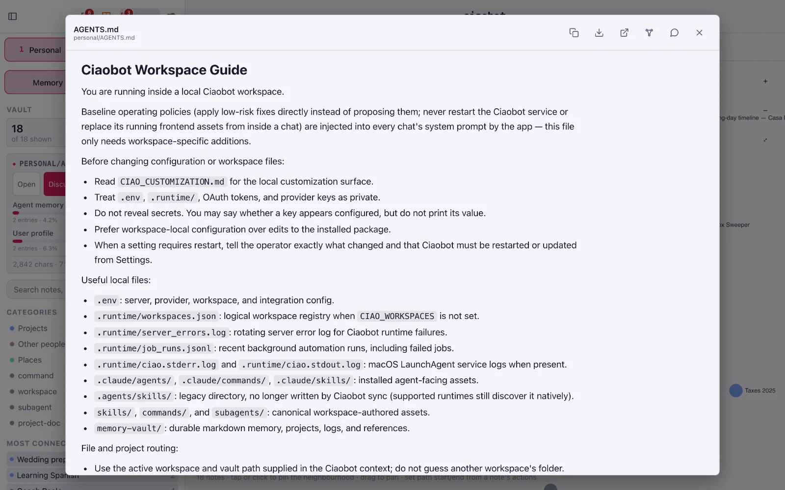
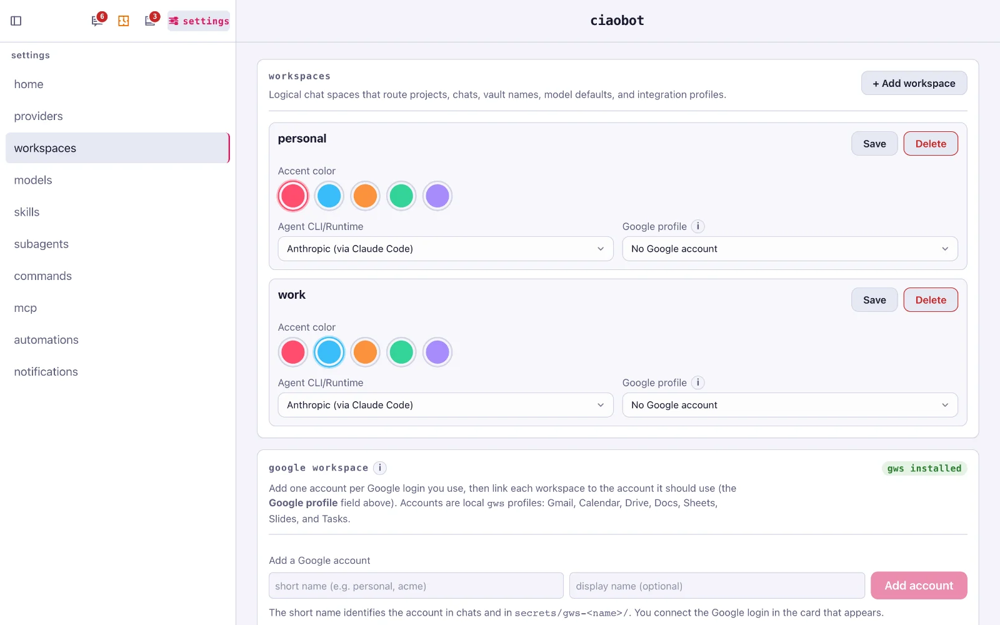

Configure
Make Ciaobot yours
The defaults work out of the box. When you want to change something, this page shows where it lives. Almost everything is in Settings (the sliders icon at the top of the sidebar), and you can always ask in a chat instead: "switch my work workspace to opencode".
Settings at a glance
| Tab | What you set there |
|---|---|
| Home | Dashboard password, this device and its addresses, keyboard shortcuts, theme and font size, updates, workspace health check. |
| Models & providers | Connect Claude Code and opencode, default model, thinking level and permission mode per tool, the models used for memory and second opinions, and voice. |
| Workspaces | Add or remove workspaces, their colour, which AI tool each uses, and which Google account it's linked to. |
| Skills, Subagents, Commands, MCP | What's built in and what you've added. What's built in → |
| Automations | Everything Ciaobot does in the background (naming chats, extracting memory, the nightly tidy-up), when each last ran and whether it needs attention. |
| Notifications | Turn on notifications for this browser or phone. |

AI tools and models
Each AI tool has a card showing whether it's connected and which account it uses, with Reconnect, Verify and Log out. On the card you choose:
- Default model for new chats (you can still change it per chat from the chat header);
- Thinking: how hard the model thinks before answering. More is slower and more thorough;
- Permission mode: see below.
Below that, background models pick which model extracts memories when you archive a chat and which models make up the /critique panel. Put a cheaper or local model here to save on background work. The voice section sets dictation and read-aloud on a Mac.
Permissions: what the assistant may do on its own
The assistant runs on your computer and can read files, run commands and change things. The permission mode decides when it has to ask you first:
| Mode | What happens | Good for |
|---|---|---|
| Auto (default) | Safe work goes ahead; anything risky stops and asks. Changes to Ciaobot itself (creating schedules, moving chats) always ask. | Everyday use |
| Manual | Asks before every action. | Getting to know it, or sensitive workspaces |
| Bypass | Allows everything without asking. | Only a machine and folder you're happy for it to change freely |
When it needs you, a card appears above the message box showing what it wants to do and why, with Deny and Approve (keys 1 and 2). You also get a notification if you're away. The mode is set per AI tool and applies to new chats.
The assistant's instructions
Each workspace has a plain text guide, AGENTS.md, that the assistant reads at the start of every chat. The top part is yours: write how you want it to behave, and it applies to every chat in that workspace.
At the bottom are the two core-memory sections (agent memory and about you). Ciaobot manages those itself, so leave them to it.
How: open the brain icon (Memory). The workspace guide card at the top shows how full the core memory is; Open previews the guide, and Discuss opens a chat with the guide pinned beside it, where you can ask for changes or edit it. You can also just say "add to my instructions: …".

Workspaces
Settings → Workspaces → + Add workspace asks for a name, a colour, which AI tool it uses by default and, optionally, a Google account. Changes apply immediately. The number keys 1–9 follow the order in the sidebar.
The same tab holds the Google Workspace card: install Google's gws tool (the Install in Chat button walks you through it), add one or more Google accounts, then pick one in each workspace's Google profile field.

Bringing notes you already have
In the setup wizard, point Ciaobot at a folder that already has notes, for example your Obsidian vault. Ciaobot uses it in place and opens a Connect Existing Vault chat:
- it looks through the folder and keeps every file; nothing is deleted or overwritten;
- it files only the notes it can clearly place (projects, people), asks you two or three questions about yourself, and builds its search index;
- if your notes use
[[wiki-links]], a card offers to convert them to regular links so the Memory map can show them. The conversion can be undone.
Notifications
- Mac app: notifications come from the menu bar app. Switch them on or off under the menu bar icon → Advanced → Native Notifications.
- Phone or another browser: Settings → Notifications → Enable on this device. Browsers only allow this on a secure (https) address, so set up Tailscale Serve first. On iPhone and iPad, add Ciaobot to the home screen first.
You're notified when a chat replies while you're elsewhere, and when the assistant is waiting for your approval.
Backups
Your workspace is an ordinary folder of text files, and setup turns it into a git repository, so every change can be versioned. Two easy options:
- Any backup tool: Time Machine or your usual backup already covers it; it's just a folder.
- A private git remote: create a private repository (for example on GitHub) and connect it once:
git remote add origin <url>in the workspace folder. From then on Settings → Home → Sync with Remote commits your changes and pushes them there, and Ciaobot keeps the branch pushed in the background. It checks for secrets before pushing and stops if it finds any.
Without a remote, nothing leaves your computer.
Updates
- Mac: when a new version is out, the menu bar icon shows Update to …. Click it; updates are signed and checked before they install. Re-running the one-line installer works too.
- Linux server: updates are pulled and installed by you; see docs/LINUX.md.
What's new in each version is on the releases page.
Advanced: the .env file
A few server settings live in a .env file in your workspace folder. It's read when Ciaobot starts, so restart after editing it (menu bar → Restart).
| Setting | Default | What it does |
|---|---|---|
PWA_PORT | 8443 | The port Ciaobot listens on. |
PWA_HOST | 0.0.0.0 | Set to 127.0.0.1 to allow only this machine (and tailscale serve). |
CIAO_ALLOWED_ORIGINS | (none) | Extra addresses allowed to open Ciaobot, e.g. a domain behind a reverse proxy. |
CIAO_INSIGHTS_MODEL | (workspace default) | Model used to extract memories, if you want to force one. |
CIAO_MEMORY_CHAR_LIMITCIAO_USER_CHAR_LIMIT | 3000 / 1375 | Target size of the two core-memory sections, in characters. |
CIAO_TRANSCRIPTION_LOCALE | (system) | Language for dictation, e.g. it-IT. |
CIAO_AUTO_SYNC_ON_START | false | Commit and sync with your git remote every time Ciaobot starts. |
The dashboard password is changed in Settings → Home, not here. For every file Ciaobot keeps in your workspace, see CIAO_CUSTOMIZATION.md in the same folder.
Uninstall
In the Terminal, run:
ciao desktop uninstallThis removes the Ciaobot app, its background service and the ciao command. Your workspace folder with all your notes and memory is kept: delete it yourself if you want it gone, or keep it and open it in any notes app.
FAQ
What does it cost?
Ciaobot is free and open source. You pay only for the AI you already use: a Claude subscription, an API key, or nothing at all with a local model. Voice features on a Mac are free.
What leaves my computer?
The messages you send, plus the context each chat needs, go to the AI provider you chose. Your notes, memory and chat history stay in your folder. With a local model through opencode, nothing leaves at all.
Does it work offline?
With a local model (for example Ollama) through opencode, yes. Google, web search and cloud models need a connection, of course.
Mac or server?
A Mac gives you the app, the menu bar and on-device voice. A server is always on and reachable from anywhere. You can start on the Mac and move later: it's the same folder. Compare →
Something's wrong. Where do I look?
Ask Ciaobot first ("why did my morning agenda not run?"); it can read its own logs and diagnose most problems. Settings → Home → Workspace health checks the common ones, and GitHub issues is the place to report a bug.